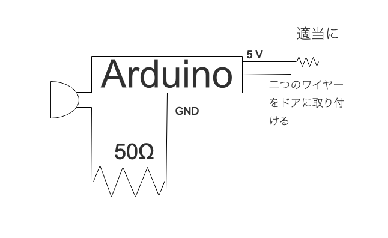

主にArduinoやRaspberry Piで作ったものについて掲示していきます。
インスタグラムで全て公開しているので合わせて閲覧してください。
ドアを開け放しておくと買っている猫が入ってくるのでArduinoでドアアラームを作ってみることに.
ドアにアルミホイルで包んだ磁石をくっつけ、ドアを開けるとブザーがなるようにしました。
仕組みは、12番ピンでドアが開いているか確認をする。
ドアが開いている（入力されない）状態になると、13番ピンからスピーカーに出力される。
回路図
